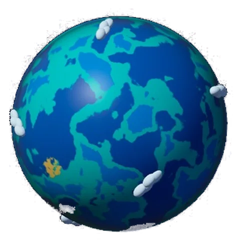
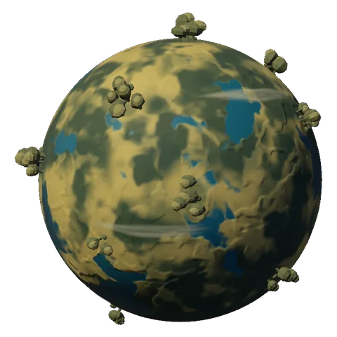
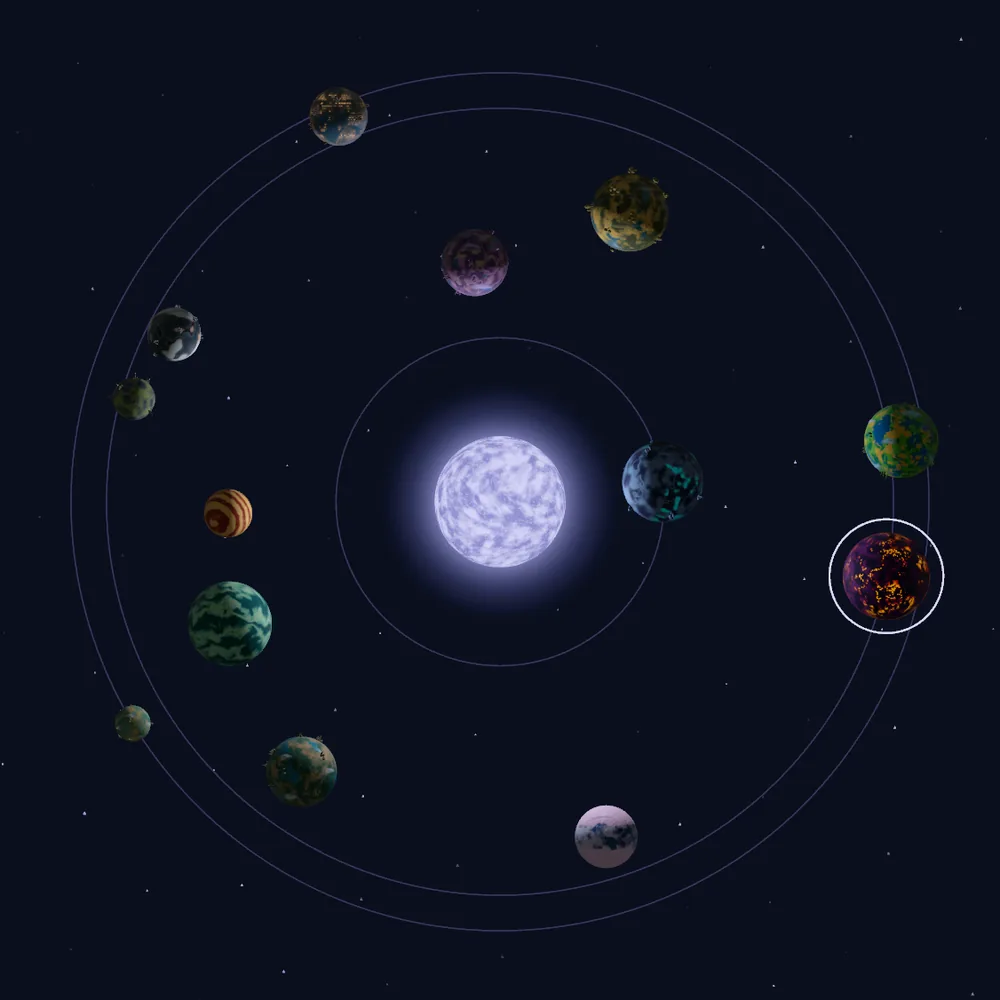
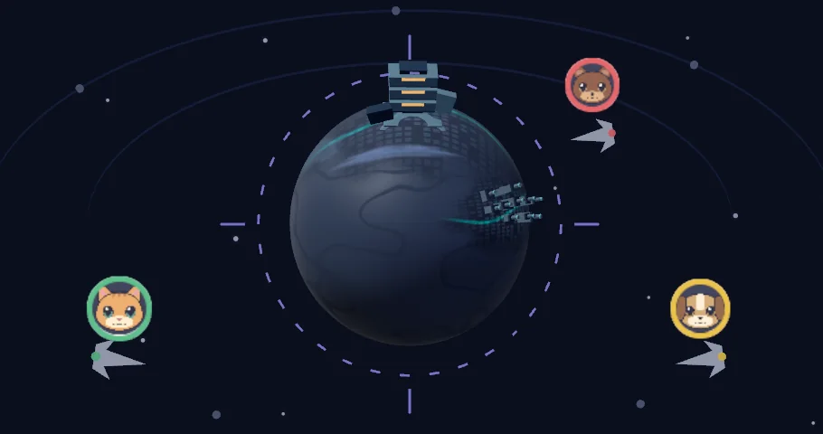

Every game you’ve played becomes a world.
Rate what you’ve played to build your orbit. The worlds you’ve visited decide where you fly next.
Hades is an obsidian underworld.
Every game gets a world of its own, and it looks the same in your friends’ orbits as it does in yours.
HadesObsidian underworld 
SubnauticaAlien ocean 
Elden RingErdtree highlands
Fun outranks everything.
Rate Fun, Gameplay, Art and sound, and Story from one to five stars. Fun sets the range, and the other three place the game within it.
Five stars for Fun and one for everything else scores 8.5. Four for Fun and five for everything else scores 8.4. A game you couldn’t put down always ranks above one you only admired.
Bigger means better. Closer means earlier.
The higher you rank a game, the bigger its world. The earlier you started playing it, the closer it orbits your star.
Your star takes its color from the gaming eras you love most.

Where you’ve been decides where you fly next.
Discovery flights look past genre. They follow the mechanics and studios behind the games you rated highly, and steer away from what you didn’t enjoy. A few picks will stretch your taste on purpose.
Each flight visits up to five worlds. Friends who scored one are already in orbit when you arrive, and their scores shape your picks when their taste lines up with yours.

Friends
Add friends by handle or friend code to see their scores and the notes they choose to share.
Privacy
Notes, tags and play dates stay private unless you share a note, and you choose who sees your profile. Privacy policy